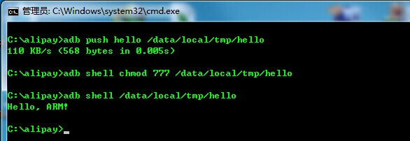
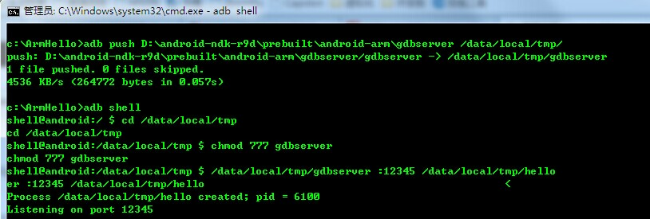
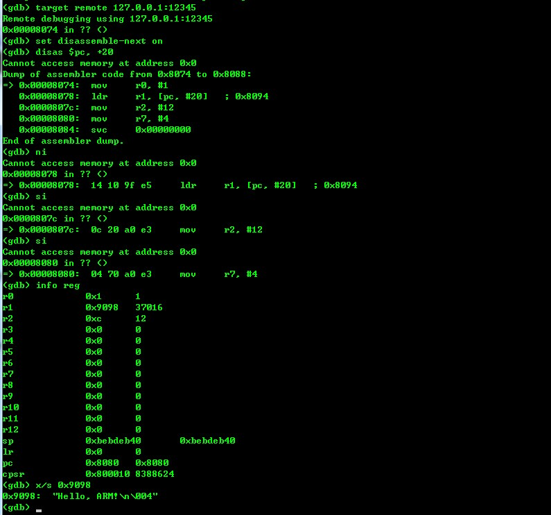

<!DOCTYPE html>
<html lang="zh-cn">
<head>
  <meta charset="utf-8">
  <meta http-equiv="X-UA-Compatible" content="IE=edge,chrome=1">
  <title>ARM汇编HelloWorld - 忆杰的博客 - 专注于软件逆向、调试、反调试、内核开发、硬件虚拟化</title>
  <meta name="renderer" content="webkit" />
<meta name="viewport" content="width=device-width, initial-scale=1, maximum-scale=1"/>

<meta http-equiv="Cache-Control" content="no-transform" />
<meta http-equiv="Cache-Control" content="no-siteapp" />

<meta name="theme-color" content="#f8f5ec" />
<meta name="msapplication-navbutton-color" content="#f8f5ec">
<meta name="apple-mobile-web-app-capable" content="yes">
<meta name="apple-mobile-web-app-status-bar-style" content="#f8f5ec">


<meta name="author" content="忆杰" /><meta name="description" content="在Windows上习惯了, 感觉一切都是那么自然, 一切都应该就是这样, 会不会在Linux下习惯了, 也会觉得Windows上的一切都不习惯? 我记" /><meta name="keywords" content="忆杰的博客, 软件逆向, 调试, 反调试, 驱动开发, 应用开发, 内核开发, VT技术, 硬件虚拟化" />


<meta name="generator" content="Hugo 0.98.0 with theme even" />


<link rel="canonical" href="https://xchen.com/post/arm%E6%B1%87%E7%BC%96helloworld/" />
<link rel="apple-touch-icon" sizes="180x180" href="/apple-touch-icon.png">
<link rel="icon" type="image/png" sizes="32x32" href="/favicon-32x32.png">
<link rel="icon" type="image/png" sizes="16x16" href="/favicon-16x16.png">
<link rel="manifest" href="/manifest.json">
<link rel="mask-icon" href="/safari-pinned-tab.svg" color="#5bbad5">


<link href="/sass/main.min.b5a744db6de49a86cadafb3b70f555ab443f83c307a483402259e94726b045ff.css" rel="stylesheet">
<link rel="stylesheet" href="https://cdn.jsdelivr.net/npm/@fancyapps/fancybox@3.1.20/dist/jquery.fancybox.min.css" integrity="sha256-7TyXnr2YU040zfSP+rEcz29ggW4j56/ujTPwjMzyqFY=" crossorigin="anonymous">


<meta property="og:title" content="ARM汇编HelloWorld" />
<meta property="og:description" content="在Windows上习惯了, 感觉一切都是那么自然, 一切都应该就是这样, 会不会在Linux下习惯了, 也会觉得Windows上的一切都不习惯? 我记" />
<meta property="og:type" content="article" />
<meta property="og:url" content="https://xchen.com/post/arm%E6%B1%87%E7%BC%96helloworld/" /><meta property="article:section" content="post" />
<meta property="article:published_time" content="2014-07-04T00:00:00+00:00" />
<meta property="article:modified_time" content="2014-07-04T00:00:00+00:00" />

<meta itemprop="name" content="ARM汇编HelloWorld">
<meta itemprop="description" content="在Windows上习惯了, 感觉一切都是那么自然, 一切都应该就是这样, 会不会在Linux下习惯了, 也会觉得Windows上的一切都不习惯? 我记"><meta itemprop="datePublished" content="2014-07-04T00:00:00+00:00" />
<meta itemprop="dateModified" content="2014-07-04T00:00:00+00:00" />
<meta itemprop="wordCount" content="1456">
<meta itemprop="keywords" content="" /><meta name="twitter:card" content="summary"/>
<meta name="twitter:title" content="ARM汇编HelloWorld"/>
<meta name="twitter:description" content="在Windows上习惯了, 感觉一切都是那么自然, 一切都应该就是这样, 会不会在Linux下习惯了, 也会觉得Windows上的一切都不习惯? 我记"/>

<!--[if lte IE 9]>
  <script src="https://cdnjs.cloudflare.com/ajax/libs/classlist/1.1.20170427/classList.min.js"></script>
<![endif]-->

<!--[if lt IE 9]>
  <script src="https://cdn.jsdelivr.net/npm/html5shiv@3.7.3/dist/html5shiv.min.js"></script>
  <script src="https://cdn.jsdelivr.net/npm/respond.js@1.4.2/dest/respond.min.js"></script>
<![endif]-->

</head>
<body>
  <div id="mobile-navbar" class="mobile-navbar">
  <div class="mobile-header-logo">
    <a href="/" class="logo">忆杰的博客</a>
  </div>
  <div class="mobile-navbar-icon">
    <span></span>
    <span></span>
    <span></span>
  </div>
</div>
<nav id="mobile-menu" class="mobile-menu slideout-menu">
  <ul class="mobile-menu-list">
    <a href="/">
        <li class="mobile-menu-item">Home</li>
      </a><a href="/post/">
        <li class="mobile-menu-item">Archives</li>
      </a><a href="/tags/">
        <li class="mobile-menu-item">Tags</li>
      </a><a href="/categories/">
        <li class="mobile-menu-item">Categories</li>
      </a><a href="/about/">
        <li class="mobile-menu-item">About</li>
      </a>
  </ul>

  


</nav>

  <div class="container" id="mobile-panel">
    <header id="header" class="header">
        <div class="logo-wrapper">
  <a href="/" class="logo">忆杰的博客</a>
</div>


<nav class="site-navbar">
  <ul id="menu" class="menu">
    <li class="menu-item">
        <a class="menu-item-link" href="/">Home</a>
      </li><li class="menu-item">
        <a class="menu-item-link" href="/post/">Archives</a>
      </li><li class="menu-item">
        <a class="menu-item-link" href="/tags/">Tags</a>
      </li><li class="menu-item">
        <a class="menu-item-link" href="/categories/">Categories</a>
      </li><li class="menu-item">
        <a class="menu-item-link" href="/about/">About</a>
      </li>
  </ul>
</nav>

    </header>

    <main id="main" class="main">
      <div class="content-wrapper">
        <div id="content" class="content">
          <article class="post">
    
    <header class="post-header">
      <h1 class="post-title">ARM汇编HelloWorld</h1>

      <div class="post-meta">
        <span class="post-time"> 2014-07-04 </span>
        <div class="post-category">
            <a href="/categories/android/"> android </a>
            </div>
          <span class="more-meta"> 约 1456 字 </span>
          <span class="more-meta"> 预计阅读 3 分钟 </span>
        
      </div>
    </header>

    <div class="post-toc" id="post-toc">
  <h2 class="post-toc-title">文章目录</h2>
  <div class="post-toc-content always-active">
    <nav id="TableOfContents"></nav>
  </div>
</div>
    <div class="post-content">
      <p>在Windows上习惯了, 感觉一切都是那么自然, 一切都应该就是这样, 会不会在Linux下习惯了, 也会觉得Windows上的一切都不习惯? 我记得我刚开始Windows编程的时候, 是从汇编开始学的, 从汇编开始学, 虽然慢, 但是每一行代码做什么的都比较清楚. 这样慢慢的深入学习感觉一切都那么自然, 现在搞Android就不是这样了, 上来就有很多东西学, 但是总是感觉吃不透.有细节没理清楚. 我觉得Android学习也应该从汇编开始.</p>
<p>搞Android这帮, 好像遗忘汇编了. 只有一些搞嵌入式的才讲汇编, 为什么Android不可以从汇编开始. 后面在网上看到这篇文章, 才坚定了我觉得Android也是可以从汇编搞起走的信心.</p>
<p><a href="http://peterdn.com/post/e28098Hello-World!e28099-in-ARM-assembly.aspx">http://peterdn.com/post/e28098Hello-World!e28099-in-ARM-assembly.aspx</a></p>
<p>这个汇编的语法是GAS. 编译用的就是ndk自带的工具, 看来没有太好的办法, 只能慢慢熟悉GAS语法了. 用GAS语法写一个arm上的HelloWorld居然是这样子的.</p>
<pre><code>.arch armv5te
.fpu softvfp
</code></pre>
<p>@&mdash;&mdash;&mdash;&mdash;&mdash;&mdash;&mdash;&mdash;&mdash;&mdash;&mdash;&mdash;&mdash;&mdash;&mdash;&mdash;&mdash;&mdash;&mdash;&mdash;&mdash;&mdash;&ndash;
.data
msg:
.ascii      &ldquo;Hello, ARM!\n&rdquo;
len = . - msg
@&mdash;&mdash;&mdash;&mdash;&mdash;&mdash;&mdash;&mdash;&mdash;&mdash;&mdash;&mdash;&mdash;&mdash;&mdash;&mdash;&mdash;&mdash;&mdash;&mdash;&mdash;&mdash;&ndash;
.text</p>
<p>.globl _start
_start:</p>
<pre><code>/\* syscall write(int fd, const void \*buf, size\_t count) \*/
mov     r0, $1     /\* fd -&gt; stdout \*/
ldr     r1, =msg   /\* buf -&gt; msg \*/
ldr     %r2, =len   /\* count -&gt; len(msg) \*/
mov     %r7, $4     /\* write is syscall #4 \*/
swi     $0          /\* invoke syscall \*/

/\* syscall exit(int status) \*/
mov     %r0, $0     /\* status -&gt; 0 \*/
mov     %r7, $1     /\* exit is syscall #1 \*/
swi     $0          /\* invoke syscall \*/
</code></pre>
<p>仔细看和Intel语法差别还是不小. 但是习惯了就好了. 用MASM写习惯的, 感觉语法都有点古怪. 不过还好, 寄存器前面可以加%也可以不加, 不加更舒服吧, 数字一定要$开头, 真恶心. 编译连接的工具在ndk的这个目录下面</p>
<p>$(NDK_ROOT)\ toolchains\arm-linux-androideabi-4.8\prebuilt\windows-x86_64\bin</p>
<p>编译和连接</p>
<p>C:\ArmHello&gt;arm-linux-androideabi-as.exe -o hello.o hello.S</p>
<p>C:\ArmHello&gt;arm-linux-androideabi-ld.exe -s -o hello hello.o</p>
<p>如果没有任何错误出现, 就表示编译通过了. 连个编译成功的提示也没有. 这个和MASM 的ml和link倒是差别不是很大. 回头有时间再好好看看arm-linux-androideabi-as.exe 和 arm-linux-androideabi-ld.exe 的命令行. 这个汇编代码的意思, 相信不用说应该也明白. 就是往console写了一句Hello, ARM然后就退出了. 使用adb上传代码, 运行代码, 你应该看到这个.</p>
<p></p>
<p>在IDA里面看比较符合Intel的语法.</p>
<p>; Segment type: Pure code
AREA .text, CODE
; ORG 0x8074
CODE32
MOV     R0, #1
LDR     R1, =s-&gt;HelloArm ; &ldquo;Hello, ARM!\n&rdquo;
MOV     R2, #0xC
MOV     R7, #4
SVC     0               ; syscall write(int fd, const void *buf, size_t count)
MOV     R0, #0
MOV     R7, #1
SVC     0               ; syscall exit(int status)</p>
<p>; &mdash;&mdash;&mdash;&mdash;&mdash;&mdash;&mdash;&mdash;&mdash;&mdash;&mdash;&mdash;&mdash;&mdash;&mdash;&mdash;&mdash;&mdash;&mdash;&mdash;&mdash;&mdash;&mdash;&mdash;&mdash;
off_8094        DCD s-&gt;HelloArm         ; DATA XREF: .text:00008078r
; _text         ends                    ; &ldquo;Hello, ARM!\n&rdquo;</p>
<p>; ===========================================================================</p>
<p>; Segment type: Pure data
AREA .data, DATA, ALIGN=0
; ORG 0x9098
s-&gt;HelloArm     DCB &ldquo;Hello, ARM!&quot;,0xA   ; DATA XREF: .text:00008078o
; .text:off_8094o
; _data         ends</p>
<pre><code>            END
</code></pre>
<p>不过还好, 只是有些细微差别, 看来要好好看看GAS语法了. 不过有点疑问的是, 我记得GAS的语法是左边赋值到右边啊, 这个汇编也是和Intel的一样, 右边到左边, 还算能够接受, 用GAS写过一点代码, 总是左右不分. 这也难怪, 叫人放弃坚持已久的左右. 怎么能够习惯.</p>
<p>代码写完, 当然就是调试了. 调试之前, 我们先让adb给我们做下端口转发:</p>
<p>adb forward tcp:12345 tcp:12345</p>
<p>调试我们使用ndk推荐的方式, 上传ndk目录下的. gdbserver 到Android 然后设置使用gdbserver运行hello.</p>
<p><a href="http://www.joenchen.com/wp-content/uploads/2014/07/20140711170446.jpg"></a></p>
<p>运行这两条命令启动gdbserver调试. 我第一次使用的时候是个三星手机, 真恶心, 死活连不上. 所以注意下手机型号, 还有目录要全名称. 以免出现神奇的错误. 进入Listening状态就表示差不多了. 这时候使用ndk目录下的arm-linux-androideabi-gdb连接上去开始调试. gdb的常用命令</p>
<p>Ni 是单步步过，si单步步入,</p>
<p>set disassemble-next on 下一句指令显示反汇编，使用set arm force-mode arm或者set arm force-mode thumb让gdb切换thumb和arm代码显示。</p>
<p>Display /i $pc 显示当前的代码</p>
<p>Continue 就是windbg的f5，od的f9</p>
<p>Info breakpoints 显示断点，而 delete删除断点 disable禁用断点</p>
<p>Disas 0xAAAA,+20（20字节的数据） 显示反汇编</p>
<p>x/s 0x9098  以字符串的形式显示内存</p>
<p>info reg 显示寄存器信息掌握这几条指令就可以开始调试了.</p>
<p><a href="http://www.joenchen.com/wp-content/uploads/2014/07/20140711173431.jpg"></a></p>

    </div>

    <div class="post-copyright">
  <p class="copyright-item">
    <span class="item-title">文章作者</span>
    <span class="item-content">忆杰</span>
  </p>
  <p class="copyright-item">
    <span class="item-title">上次更新</span>
    <span class="item-content">
        2014-07-04
        
    </span>
  </p>
  
  
</div>
<footer class="post-footer">
      
      <nav class="post-nav">
        <a class="prev" href="/post/arm%E6%B1%87%E7%BC%96%E8%81%94%E5%90%88c%E8%AF%AD%E8%A8%80/">
            <i class="iconfont icon-left"></i>
            <span class="prev-text nav-default">ARM汇编联合C语言</span>
            <span class="prev-text nav-mobile">上一篇</span>
          </a>
        <a class="next" href="/post/windbg-version/">
            <span class="next-text nav-default">Windbg Version</span>
            <span class="next-text nav-mobile">下一篇</span>
            <i class="iconfont icon-right"></i>
          </a>
      </nav>
    </footer>
  </article>
        </div>
        

  

  
    <script src="https://utteranc.es/client.js"
            repo="chen-yijie/utterances-Comment"
            issue-term="pathname"
            theme="github-light"
            crossorigin="anonymous"
            async>
    </script>
    <noscript>Please enable JavaScript to view the <a href="https://github.com/utterance">comments powered by utterances.</a></noscript>

      </div>
    </main>

    <footer id="footer" class="footer">
      <div class="social-links">
      <a href="mailto:chen-yijie@qq.com" class="iconfont icon-email" title="email"></a>
      <a href="https://github.com/chen-yijie" class="iconfont icon-github" title="github"></a>
      <a href="https://www.zhihu.com/people/joen88" class="iconfont icon-zhihu" title="zhihu"></a>
  <a href="https://xchen.com/index.xml" type="application/rss+xml" class="iconfont icon-rss" title="rss"></a>
</div>

<div class="copyright">
  <span class="power-by">
    由 <a class="hexo-link" href="https://gohugo.io">Hugo</a> 强力驱动
  </span>
  <span class="division">|</span>
  <span class="theme-info">
    主题 - 
    <a class="theme-link" href="https://github.com/olOwOlo/hugo-theme-even">Even</a>
  </span>

  

  <span class="copyright-year">
    &copy; 
    2022<span class="heart"><i class="iconfont icon-heart"></i></span><span>忆杰</span>
  </span>
</div>

    </footer>

    <div class="back-to-top" id="back-to-top">
      <i class="iconfont icon-up"></i>
    </div>
  </div>
  
  <script src="https://cdn.jsdelivr.net/npm/jquery@3.2.1/dist/jquery.min.js" integrity="sha256-hwg4gsxgFZhOsEEamdOYGBf13FyQuiTwlAQgxVSNgt4=" crossorigin="anonymous"></script>
  <script src="https://cdn.jsdelivr.net/npm/slideout@1.0.1/dist/slideout.min.js" integrity="sha256-t+zJ/g8/KXIJMjSVQdnibt4dlaDxc9zXr/9oNPeWqdg=" crossorigin="anonymous"></script>
  <script src="https://cdn.jsdelivr.net/npm/@fancyapps/fancybox@3.1.20/dist/jquery.fancybox.min.js" integrity="sha256-XVLffZaxoWfGUEbdzuLi7pwaUJv1cecsQJQqGLe7axY=" crossorigin="anonymous"></script>


<script type="text/javascript" src="/js/main.min.64437849d125a2d603b3e71d6de5225d641a32d17168a58106e0b61852079683.js"></script>


</body>
</html>
